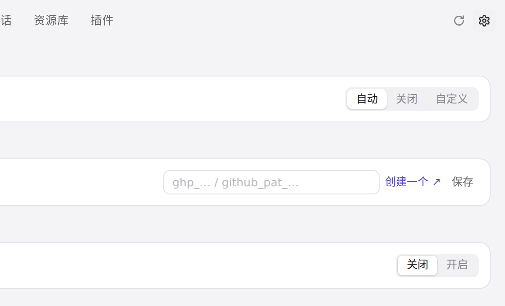
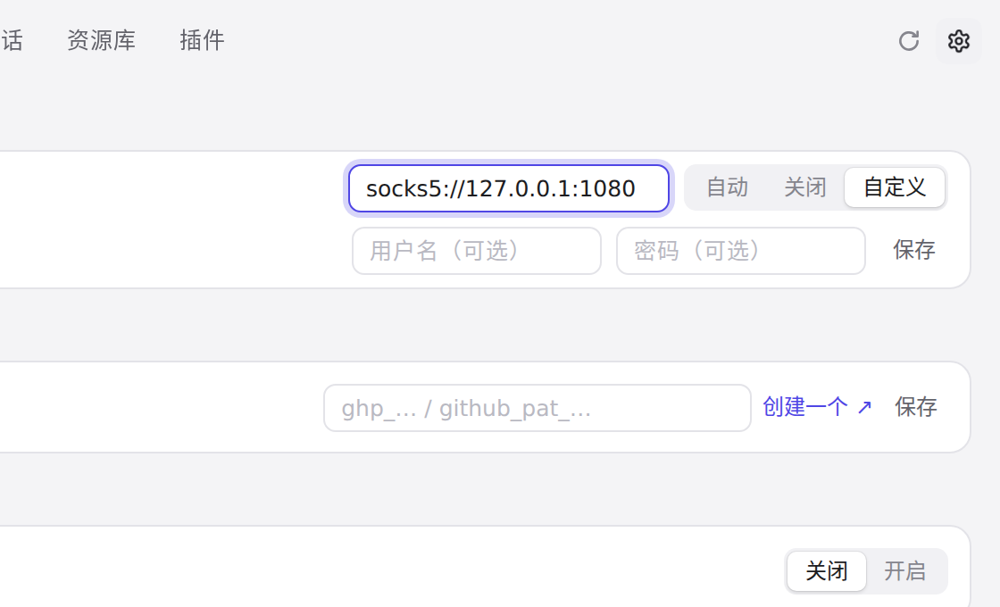
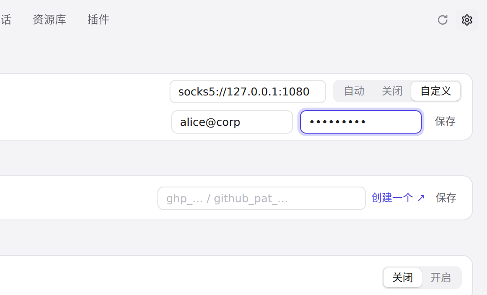
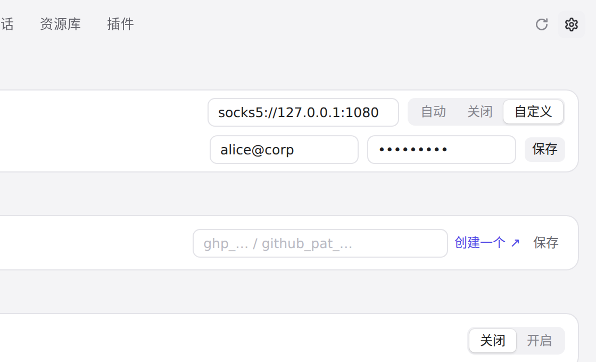
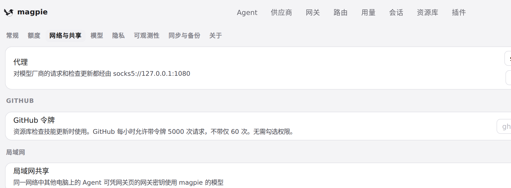

#852 界面预览
commit 3273a2a · 回到 PR · 设置 › 网络与共享 的代理行在地址是 socks5:// / socks5h:// 时，会在地址框之外多出「用户名（可选）」「密码（可选）」两个输入框和一个「保存」按钮；保存后地址栏里不含凭据，代理状态文字也不再显示凭据，HTTP 等其它地址与原来一样。
红线是鼠标走过的轨迹，红色圆环是一次点击；底部文字是这一步在做什么。空格暂停，← → 逐段查看。

SOCKS5 代理的用户名与密码 · 代理行，代理方式当前为「自动」

SOCKS5 代理的用户名与密码 · 地址为 socks5:// 时，这一行多出的用户名、密码与「保存」

SOCKS5 代理的用户名与密码 · 用户名与密码都已填写

SOCKS5 代理的用户名与密码 · 保存后这一行：地址栏、用户名栏与密码栏

SOCKS5 代理的用户名与密码 · 保存后的代理状态文字